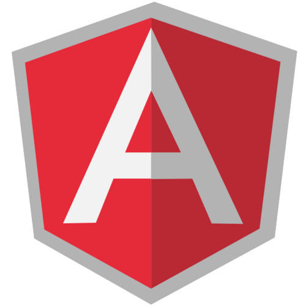

Introduction to
HTML enhanced for web apps!
<!-- directive: ng-mavimo -->
{ { name } } -> Marco Vito Moscaritolo
{ { role } } -> Developer
{ { company | link } } -> Agavee
{ { twitter | link } } -> @mavimo
Heads Up
Starting from template...
...adding controllers...
...and filters...
...using routing...
...manage resources...
...and fun :)
Templates (directives)
Directives are a way to teach HTML new tricks. During DOM compilation directives are matched against the HTML and executed. This allows directives to register behavior, or transform the DOM.
<span ng-repeat="exp"></span>
<span class="ng-repeat: exp;"></span>
<ng-repeat></ng-repeat>
<!-- directive: ng-repeat exp -->
The directives can be placed in element names, attributes, class names, as well as comments.
<!doctype html>
<html ng-app>
<head>
<script src="https://ajax.googleapis.com/ajax/libs/angularjs/1.0.6/angular.min.js" ></script>
</head>
<body>
<div>
<input type="text" ng-model="sample" placeholder="Enter text">
<hr>
<h1>{{ sample }}!</h1>
</div>
</body>
</html>{{sample}}
<!doctype html>
<html ng-app>
<head>
<script src="js/angular.min.js" ></script>
<script src="js/demo.js" ></script>
</head>
<body>
<ul ng-controller="getGdgList">
<li ng-repeat="gdg in gdgs">{{ gdg.name }} have {{ gdg.members }} members</li>
</ul>
</body>
</html>- {{ gdg.name }} have {{ gdg.members }} members
and also
- ng-show
- ng-switch
- ng-class
- ...
Controllers
<!doctype html>
<html ng-app>
<head>
<script src="js/angular.min.js" ></script>
<script src="js/demo.js" ></script>
</head>
<body>
<ul ng-controller="getTweets">
<li ng-repeat="tweet in tweets"></li>
</ul>
</body>
</html>function getTweets($scope, $http) {
var search = 'gdg';
var url = 'http://search.twitter.com/search.json?q=' + search;
$http({ method: 'GET', url: url })
.success(function(data, status, headers, config) {
$scope.tweets = data.results;
})
.error(function(data, status, headers, config) {
console.log('Error: fetch tweets');
$scope.tweets = {};
});
return $scope;
}Methods in controller
function getTweets($scope, $http) {
// ...
$scope.getMore = function () {
// ...
}
// ...
return $scope;
}]);<ul ng-controller="getTweets">
<li ng-repeat="tweet in tweets"></li>
<li ng-click="getMore()">Get more</li>
</ul>Controller in module
var gdgApp = angular.module('gdgApp', []);
gdgApp.controller('getTweets', ['$scope', '$http', function($scope, $http) {
var search = 'gdg';
var url = 'http://search.twitter.com/search.json?q=' + search;
$http({ method: 'GET', url: url }).
success(function(data, status, headers, config) {
$scope.tweets = data.results;
}).
error(function(data, status, headers, config) {
console.log('Error: fetch tweets');
$scope.tweets = {};
});
return $scope;
}]);Dependency Injection
Dependency Injection (DI) is a software design pattern that deals with how code gets hold of its dependencies.
Services
Angular services are singletons that carry out specific tasks.
Eg. $http service that provides low level access to the browser's XMLHttpRequest object.
gdgApp.controller('getTweets', ['$scope', '$http', function($scope, $http) {
// ...
return $scope;
}]);angular.module('gdgModuleAlarm', []).
factory('alarm', function($window) {
return {
alarm: function(text) {
$window.alert(text);
}
};
}
);Injectors
// New injector created from the previus declared module.
var injector = angular.injector(['gdgModuleAlarm', 'ng']);
// Request any dependency from the injector
var a = injector.get('alarm');// We can also force injecting using
var alarmFactory = function (my$window) {};
alarmFactory.$inject = ['$window'];Filters
Filters perform data transformation.
They follow the spirit of UNIX filters and use similar syntax | (pipe).
<!doctype html>
<html ng-app>
<head>
<script src="js/angular.min.js" ></script>
<script src="js/demo.js" ></script>
</head>
<body>
<a href="" ng-click="predicate = 'members'; reverse=!reverse"<Sort</a>
<ul ng-controller="getGdgList">
<li ng-repeat="gdg in gdgs | orderBy:predicate:reverse ">{{ name | uppercase }} have {{ members }} members</li>
</ul>
</body>
</html>- {{ gdg.name | uppercase}} have {{ gdg.members }} members
Creating custom filters
angular.module('agaveeApp', [])
.filter('orderByVersion', function() {
return function(modules, version) {
var parseVersionString = function (str) { /* .. */ };
var vMinMet = function(vmin, vcurrent) { /* .. */ };
var result = [];
for (var i = 0; i < modules.length; i++) {
if (vMinMet(modules[i].version_added, version)) {
result[result.length] = modules[i];
}
}
return result;
};
});
Model
The model is the data which is merged
with the template to produce the view.

<!doctype html>
<html ng-app>
<head>
<script src="https://ajax.googleapis.com/ajax/libs/angularjs/1.0.6/angular.min.js" ></script>
</head>
<body>
<div>
<input type="text" ng-model="sample" placeholder="Enter text">
<hr>
<h1>{{ sample }}!</h1>
</div>
</body>
</html>Configuration
angular.module('gdgApp', [])
.constant('gdg', {
'url' : 'http://localhost:3000',
'token': 'e9adf82fd1cb716548ef1d4621a5935dcf869817'
})
// Configure $http
.config(['$httpProvider', 'gdg',
function ($httpProvider, gdg) {
$httpProvider.defaults.headers.common['X-gdg-API-Key'] = gdg.token;
}
]);Routing
angular.module('gdgApp', [])
// Configure services
.config(['$routeProvider', function ($routeProvider) {
$routeProvider.when('/projects', {
templateUrl: 'views/projects.html',
controller: 'ProjectsCtrl'
});
$routeProvider.when('/projects/:project', {
templateUrl: 'views/project.html',
controller: 'ProjectCtrl'
});
$routeProvider.otherwise({redirectTo: '/projects'});
}]);Resource
angular.module('resources.project', ['ngResource'])
.factory('Project', ['$http', '$resource', 'gdg', function ($http, gdg) {
return $resource(gdg.url + '/project/:projectId', {projectId:'@id'}, {
query : { method : 'GET', isArray:true},
create : { method : 'POST' },
save : { method : 'PUT' },
delete : { method : 'DELETE' }
});
}]);
// ...
var p = new Project();
p.name = 'GDG Milan';
p.$save();
angular.module('resources.project', ['ngResource'])
.factory('Project', ['$http', 'gdg', function ($http, gdg) {
var Project = function (data) {
angular.extend(this, data);
};
// a static method to retrieve Project by ID
Project.get = function (id) {
return $http.get(gdg.url + '/projects/' + id).then(function (response) {
return new Project(response.data);
});
};
// an instance method to create a new Project
Project.prototype.create = function () {
var project = this;
return $http.post(gdg.url + '/projects.json', project).then(function (response) {
project.id = response.data.id;
return project;
});
};
// an instance method to pudate create a new Project
Project.prototype.update = function () {
var project = this;
return $http.put(gdg.url + '/projects/' + project.id + '.json', project).then(function (response) {
return project;
});
};
// an instance method to delete a new Proect
Project.prototype.delete = function () {
var project = this;
return $http.delete(gdg.url + '/projects/' + project.id + '.json').then(function (response) {
});
};
return Project;
}]);Testing
Karma - a test runner that fits all our needs.
Jasmine - Jasmine is a behavior-driven development framework for testing JavaScript code.
describe('Controller: getGdgList', function () {
// load the controller's module
beforeEach(module('gdgApp'));
var getGdgList, scope;
// Initialize the controller and a mock scope
beforeEach(inject(function ($controller) {
scope = {};
getGdgList = $controller('getGdgList', {
$scope: scope
});
}));
it('GDG List must display defined number of items', function () {
expect(scope.gdgs.length).toBe(10);
});
it('GDG item must have members up to 0', function () {
angular.forEach(scope.gdgs,function (key, gdg) {
expect(gdg.members).toBeGreaterThan(0);
}
});
it('GDG item must have name and members', function () {
angular.forEach(scope.gdgs,function (key, gdg) {
expect(gdg.name).toBeDefined();
expect(gdg.members).toBeDefined();
}
});
});
?
Questions time